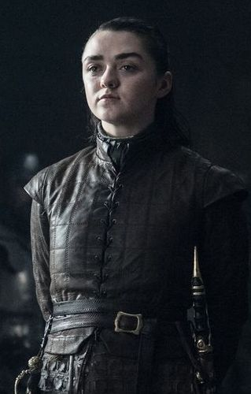

When you play the game of thrones, you win or you die. There is no middle ground.




Game of Thrones is an American fantasy drama television series created by David Benioff and D. B. Weiss. It is an adaptation of A Song of Ice and Fire, George R. R. Martin's series of fantasy novels, the first of which is A Game of Thrones. It is filmed in Belfast and elsewhere in the United Kingdom, Canada, Croatia, Iceland, Malta, Morocco, Spain, and the United States. The series premiered on HBO in the United States on April 17, 2011, and its seventh season ended on August 27, 2017. The series will conclude with its eighth season premiering either in 2018 or 2019
Set on the fictional continents of Westeros and Essos, Game of Thrones has several plot lines and a large ensemble cast but centers on three primary story arcs. The first story arc centers on the Iron Throne of the Seven Kingdoms and follows a web of alliances and conflicts among the dynastic noble families either vying to claim the throne or fighting for independence from the throne. The second story arc focuses on the last descendant of the realm's deposed ruling dynasty, exiled and plotting a return to the throne. The third story arc centers on the longstanding brotherhood charged with defending the realm against the ancient threats of the fierce peoples and legendary creatures that lie far north, and an impending winter that threatens the realm.
The Unsullied, led by a grim-faced Grey Worm, line up in tight formation outside the walls of King's Landing. On the walls, Jaime Lannister and Bronn discuss how the latter is unnerved by the idea of soldiers without genitalia, as he's been around enough soldiers to know why they fight, and that the idea of soldiers who fight for no promise of sex is alien to him. As they talk, hordes of Dothraki ride in, a stark contrast to the disiplined Unsullied; but the two ancient enemies are united in cause today.
At the harbor, Tyrion Lannister, Varys, Missandei, Jon Snow and Davos Seaworth nervously sail past Euron Greyjoy's fleet. Sandor Clegane goes below decks to check on their "guest", who is thankfully just as riled up as ever.

Getting the meeting on track, Tyrion, Daenerys, and Jon try to warn Cersei of the greater threat coming for them all, but she dismisses it as a ploy to trick her into lowering her defenses. To prove their claims, Sandor returns with the crate containing the wight, which is worryingly silent. Sandor gets the crate open, but there is still no movement. He finally gives the crate a massive kick, which prompts the enraged wight to launch itself out and charge toward the nearest target - Cersei, appropriately enough. Visibly horrified, the Lannister queen and her allies recoil in horror as Sandor pulls the wight back on a chain, its claws inches from Cersei's face, and manages to slice the creature in half when it turns to attack him. The assembled look on in shock as the wight's upper half still moves around. Jon steps forward and picks up the wight's discarded hand, using a torch provided by Davos to demonstrate how fire can be used to stop them.
He then uses a dragonglass dagger to the heart to end the wight's upper half, bluntly stating that if they don't win the coming war, such a fate awaits every person in Westeros. A horror-struck Jaime asks how many wights are coming, and Daenerys tells him the army of the dead numbers at least 100,000. Euron asks if the wights can swim. When Jon responds, "No," Euron announces to Cersei his intention to withdraw the Iron Fleet back to the Iron Isles. He declares that he has been over the whole world and has never been terrified until now. On his way out, he tells Daenerys to retreat to her island while he returns to his own, and to come find him when they are the only two left alive.
In the Red Keep, Tyrion, escorted by Ser Gregor, meets Jaime, who confirms that he believes the threat of the Dead, but has been unable to convince Cersei. Tyrion enters Cersei's office, and the two trade savage barbs, Cersei blames his murder of Tywin for the series of events that led to her younger children's deaths and the destruction of House Lannister's future. Tyrion maintains that he loved Myrcella Baratheon and Tommen Baratheon almost as much as Cersei and that he regrets what happened to them. He attempts to call Cersei's bluff, claiming that if Cersei genuinely blamed him for their deaths, then Gregor should just kill him right then and there. A tense moment passes... in which Cersei does not give the order. Relieved, Tyrion heads straight for the wine. They continue their discussion until Tyrion realizes that Cersei is pregnant.
Back at the Dragonpit, Daenerys and Jon discuss the dragons and how her ancestors caged them, and in turn become less impressive as the power of the dragons waned. Jon questions Daenerys's assertion of infertility, particularly when she admits that she never got an informed opinion about her condition from anyone except Mirri Maz Duur herself. Their conversation is interrupted by the return of all three Lannisters. Cersei has agreed to work with Daenerys, but not by keeping her troops back: the Lannister army will march north to fight alongside the Starks and Targaryens.
After the enemy delegation has left, an eager and relieved Jaime meets with his commanders to discuss the logistics of moving the army north. Cersei enters the map room and asks what he is doing. Dismissing the commanders, she tells Jaime he really is the stupidest Lannister. Shocked, Jaime listens as Cersei explains that Euron has not abandoned her, but has gone to Essos to ferry the Golden Company back to Westeros. She intentionally leaked her pregnancy to Tyrion so he would believe her, and now she intends to allow their enemies to exhaust themselves against the Army of the Dead, then have the Golden Company clean up what's left of whoever wins in the North. Jaime is furious that his sister and Euron plotted this behind his back, but Cersei angrily accuses him of plotting with Tyrion in favor of her enemies. Reeling from the accusation, Jaime incredulously reminds her that whoever wins the conflict in the North will turn their attention south afterwards; either the White Walkers will march south to kill them, or the Starks and Targaryens will come seeking revenge over the fact Cersei betrayed and left them (and essentially all of Westeros) to die, but Cersei is indifferent. Finally seeing his sister for the power-mad narcissist she truly is, Jaime disgustedly declares that he, at least, will fight to honour the pledge he made. When he tries to leave, he finds his way blocked by Ser Gregor. Cersei furiously insists that she will kill him as a traitor if he tries to leave, but Jaime calls her bluff and storms out, and Cersei does not give the order.
Alone, Jaime rides out of King's Landing. Realizing how conspicuous he is, he nervously pulls a glove over his golden hand. Surprised by the sudden appearance of a drop of water on the glove, Jaime looks up and sees a blanket of snow descending upon King's Landing. As Jaime rides away, the snow begins to cover everything; the streets, the houses, the ruins where the Great Sept once stood, the little skulls in the Dragonpit and even Cersei's map in the Red Keep. Winter has come at last for the south.
Sansa Stark discusses the potential threat of her sister Arya Stark with Petyr Baelish. Baelish tries to manipulate her as usual, encouraging her to think as he does. He tells Sansa to ask herself what Arya's worst possible motivation is. Seemingly overcome with horror at the thought that Arya would want to take her place and reign as Lady of Winterfell, it seems that Sansa decides to do something about it, to Baelish's quiet delight.
After a long time reflecting on her course of action on the battlements, Sansa orders Arya be brought to the great hall. In the Hall, Sansa and Bran are seated at the great table, the hall lined with Stark and Arryn men and a few key lords such as Yohn Royce and, of course, Baelish. Arya is brought in and asks Sansa if she "really wants to do this". Sansa replies it's not about what she wants, it's about justice, and them proceeds to rattle off a list of crimes perpetuated against House Stark... and asks Baelish how he intends to answer the charges. At this, all eyes turn towards Baelish. Thrown, Littlefinger tries to figure out what is going on. Sansa reveals his murder of Lysa Arryn and his use of Lysa to murder Jon Arryn. She uses his own words against him and accuses him (quite correctly) of orchestrating the conflict between the Starks and the Lannisters that has ultimately engulfed the Seven Kingdoms for the better part of the last decade, including the betrayal and death of her father Eddard Stark.
On the battlements, Sansa and Arya discuss Littlefinger's plots and how much they, as people, have changed. Arya tells Sansa that she wouldn't have been able to survive what Sansa did, although her sister disagrees, saying Arya is the strongest person she knows. The sisters muse on another of their father's stories, about how lone wolves die in the winter, but wolf packs survive, and realize the truth of his words as the Starks have at last been reunited.
Some time later, Samwell Tarly and Gilly arrive at Winterfell. Upon hearing that Bran is back, Sam calls on him, recalling their meeting at the Nightfort some years earlier. Bran is glad to see Sam, but is surprised to find him here. When Sam reiterates his loyalty to Jon, Bran, unable to keep it a secret any longer, reveals the truth of Jon's origins: he was born to Rhaegar Targaryen and Lyanna Stark at a Tower in Dorne, and is not a Snow at all, but a Sand. Sam realizes that that isn't true either, recalling the entry from High Septon Maynard's private journal about annulling Rhaegar's marriage. Bran expressed his doubts, but Sam reiterates the private nature of the journal and encourages Bran to use Greensight to confirm it.
To his own surprise, Bran easily finds the wedding, where he sees a clearly happy Lyanna wedding Rhaegar in a Faith of the Seven ceremony before a Heart tree. Warging forward to the Tower of Joy, Bran finally hears Lyanna's dying words. Now piecing the truth together, Bran declares that Rhaegar never raped Lyanna. She loved him and ran off with him, and bore him a son: Aegon Targaryen. His voice breaks a little as he realizes that Robert's Rebellion, the deaths of his grandfather and uncle, and the entire reign of House Baratheon of King's Landing was all for nothing and built on a lie.